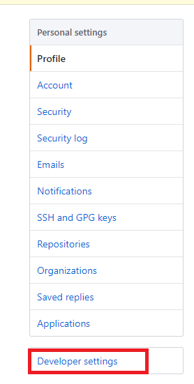
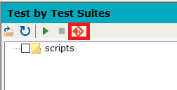

GFriend Git Client
Note : GFriend git client is only available on 64bit Operating
System.
Preparation
Acquire HTTP Access Token
Log on to Github and goto settings. (Click your account in top left
and select Settings.)
Goto Developer Settings - Personal Access Tokens

Click Generate New Token
Fill out Note (That you can easily recognize of your purpose later)
and check "repo" checkbox than click Generate Token button in the
bottom.
After click Generate Token button, you will can see the access token
as below. To copy it to clipboard, click copy icon (red box).
NOTE : if you leave this page, you WILL NOT see the token
again.
Set your information in GFriend Git Client
Click Git icon which located just above folder explorer. Then Git
client will be displayed. (If you click Git icon again, Git client will
be disappeared.)

In the Client, click settings button.
Fill out User name, Email and HTTP Token in Global Config section and
click Save button.
NOTE: Your http token will be saved as a
file(gfGitConfig.xml) with encryption. This file only can be decrypted
in the PCs that you saved.

Note: Your user name also can be found in home page of Github.
Clone a new Repository
You can clone new repository from Github. Go to Github repository to
clone and get clone URL. Click Clone or download button in the
repository and get clone URL to your clipboard by clicking copy
button.
If you see Clone With SSH instead of Clone With HTTPS, click Use
HTTPS to get HTTPS based URL.
Go back to the GFriend Git client settings, fill out Clone URL and
select folder to clone. (NOTE: Destination folder must be empty)
After few secondes (it depends on size of repository) clicking Clone
button, you will see the message in GFriend output window as below:

Also GFriend will set your script root to cloned folder.
Using existing Git local
repository
If you already have local repository, you can just open folder.
Basic Operations
(Branches, Pull Changes)
Sync
If there is new updates on remote repository (Github), you can pull
the changes with Pull button. After few seconds clicking Pull button (it
also depends on size of changes), you will see complete message (Sync
with Github.) in output window.
Branches
You can change or create branch in GFriend Git client. Click branch
name then branch selector will be displayed.
Select one of branch in the tree or type new branch name on text box.
Click Green arrow button will change (checkout) branch to your
selection.
Working with changes
Upload Changes to Github (Add, Stage, Commit and Push) After
changing files in your local git repository, you will see changes in
GFriend Git Client.
Select (check) file(s) which you want to upload.
Enter change description and click Upload to Github button then
changes will be uploaded to the Github. (Add, Stage, Commit and Push
operations of git will be executed at once.)
Check uploaded changes in Github
Go to Github repository and change branch which you've selected in
GFriend Git Client.
If you click commits buttons, you can see your uploaded changes.
Create Pull Request
To merge changes in your branch to other branch(e.g. master), Go to
Pull Request and Click New pull request button.
Select compare branch(your branch) and base branch(branch to merge
change) then click Create pull request button.
You can leave comments of pull request and assign reviewers.
Merge Pull Request
After pull request verification (ex. review done), you can merge your
pull request to base branch.